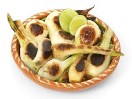
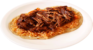
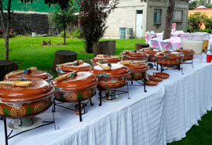
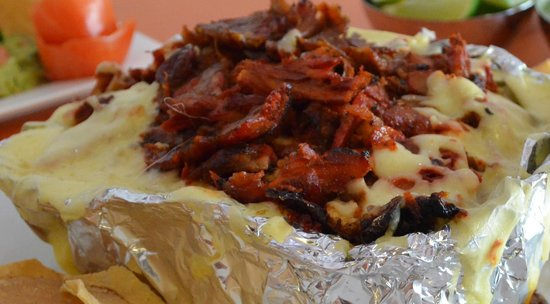
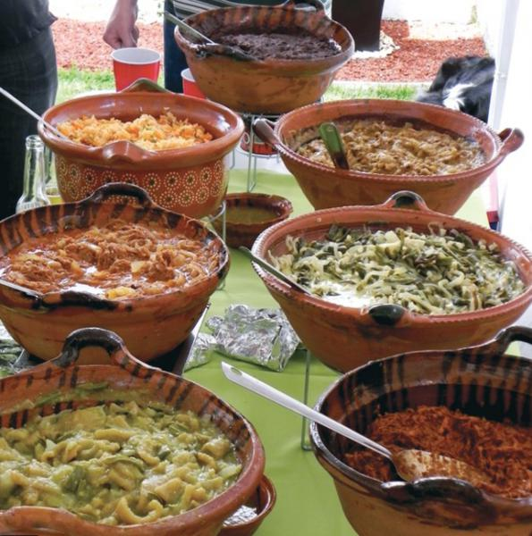

TaquitoMX
Fiestas y Eventos
  
PARRILLADA MIXTA CON QUESO:
- PASTOR, BISTEC, CHORIZO, CHULETA, QUESO
- COMPLEMENTOS: Salsa Roja, Salsa Verde, Salsa Mexicana, Cilantro, Cebolla, Piña y Limones
- CORTESÍA: Tortillas de Harina, Cebollitas Cambray, Verdura para Alambres
PARRILLADA MIXTA CON QUESO Y ARRACERA
- PASTOR, BISTEC, CHORIZO, CHULETA, QUESO, ARRACHERA
- COMPLEMENTOS: Salsa Roja, Salsa Verde, Salsa Mexicana, Cilantro, Cebolla, Piña y Limones
- CORTESÍA: Tortillas de Harina, Cebollitas Cambray, Verdura para Alambres
TACOS DE PASTOR CON QUESO
- GRINGAS:(Tortilla de harina, Pastor y Queso fundido)
- QUESADILLAS:(Tortillas de harina y Queso fundido)
- COMPLEMENTOS:Salsa Roja, Salsa Verde, Salsa Mexicana, Cilantro, Cebolla, Piña y Limones

TACOS DE GUISADO (4 a escoger)
-
POLLO CON MOLE, TINGA DE RES, COCHINITA PIBIL, PAPAS CON CHORIZO, RAJAS CON CREMA, CHICHARRÓN EN SALSA VERDE
-
COMPLEMENTOS:Cochinita, Salsa roja, Salsa verde y Limones
- CORTESÍA:Arroz y Frijoles

Todas las opciones anteriores incluyen:
- 2 horas de servicio de comida
- Supervisor responsable
- Personal uniformado y capacitado
- Bolsas para la basura
- Servilletas, platos y tenedores desechables
- Saleros y servilleteros
- Tortillas de maíz
Notas:
- Todas las opciones de taquizas incluyen 8 tacos por persona
- Podemos incluir costilla en nuestras taquizas con un costo adicional
- Los productos que manejamos son elaborados con materias primas de primera calidad
- En caso de que el evento se realice fuera del D.F. se cobrará el flete por separado
- Para confirmar su evento será necesario contar con un anticipo del 50%, 48 horas antes del mismo